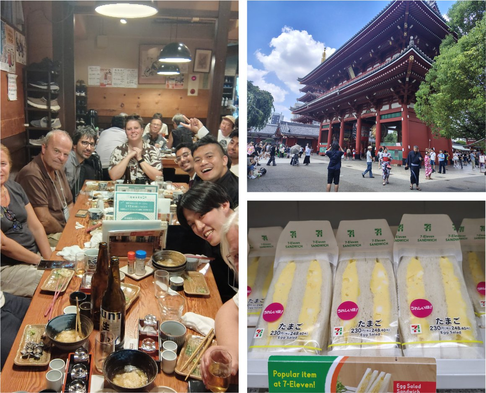

Back from Tokyo
Reflections on ICEC 2025 (Part 1 of 2)

I am back in the Netherlands after a week in Tokyo for the International Conference on Entertainment Computing (ICEC). Still jet-lagged, still processing the experience, and already missing the food. This was my first time presenting at an international academic conference, and I was proud to represent both Breda University of Applied Sciences and the University of Antwerp. Nerves and all, I pulled it off.
I presented our research paper “Unveiling gender bias in LLM-generated hero and heroine narratives” and facilitated an interactive workshop that transformed our methodology into a live experiment. Participants generated hero and heroine narratives using LLMs and then analyzed the gender patterns that appeared. Watching bias emerge in real time prompted lively discussions and even unexpected directions, one participant proposed applying the method to anthropomorphic animal game characters, an angle I had not considered before. When people conduct the research themselves, they engage with it in a way that reading about it cannot fully convey.
The poster sessions showed some creative projects. One featured an e-paper screen designed to replace printed posters in rural areas; it consumes power only when the content changes, for example, when someone walks by. A simple yet sustainable innovation. Another demonstrated a guitar-learning game that awards points for correctly struck chords, blending gameplay with skill-building. Seeing students address practical challenges with such creativity was a strong reminder of why I chose this field.
The networking proved equally valuable. I met Nicko, a lecturer from Ritsumeikan University, who brought some of his second-year bachelor students to the conference. Having undergraduate work accepted was impressive, and we quickly found common ground in our shared commitment to project-based learning. Later that evening, over beer and traditional Japanese small dishes at an izakaya with other conference researchers, we discussed potential student exchanges between our universities. Academic conversations flow differently when you are sharing yakitori and cold beer.
Beyond the conference itself, Tokyo became an educational experience in its own right. The Germans call this Bildung - learning that shapes who you are, not just what you know. My university’s motto is “Creating meaningful experiences,” and this trip certainly lived up to it. In Asakusa, I visited the Senso-ji temple and received a goshuin (i.e., temple seal), then purchased a Kokeshi doll from a nearby shop where the owner wrapped it with great care. These traditional wooden dolls, which first appeared in the Tohoku region during the Edo period (1603-1868) as souvenirs for hot spring visitors, now sit on my desk as a reminder of my trip to Tokyo.
And then, of course, there was the food. I enjoyed many memorable meals during the week, but one unexpected highlight was the egg sandwich from convenience stores such as 7-Eleven. The late chef, author and travel documentarian Anthony Bourdain once called them “pillows of love,” and after tasting one, I understood why. Creamy mayonnaise, perfectly soft egg, and bread that remained remarkably fluffy. Albert Heijn, any chance you could introduce these to your assortment?
Part two will cover my article presentation in more detail, several lectures I attended, Tokyo adventures with fellow researchers, and more culinary discoveries. For now, I am grateful that a PhD occasionally takes you to places where the most meaningful learning happens not only within the conference halls but just as much beyond them.